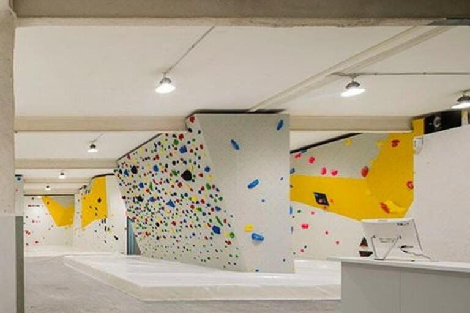

Servei · Mataró
Centre d'entrenament d'escaladors, espai d'iniciació a l'escalada i un centre d'oci esportiu urbà, obert a totes les edats, nivells de forma i maneres d'entendre l'esport de l'escalada.